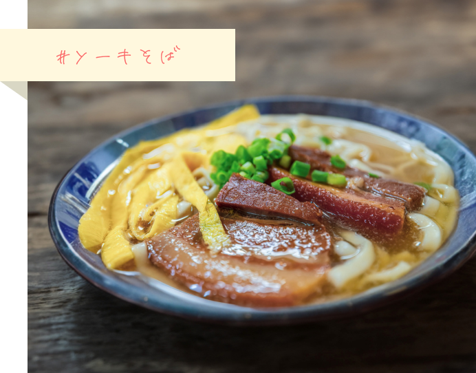
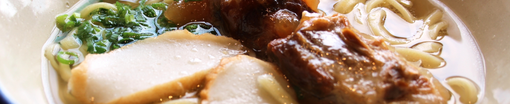
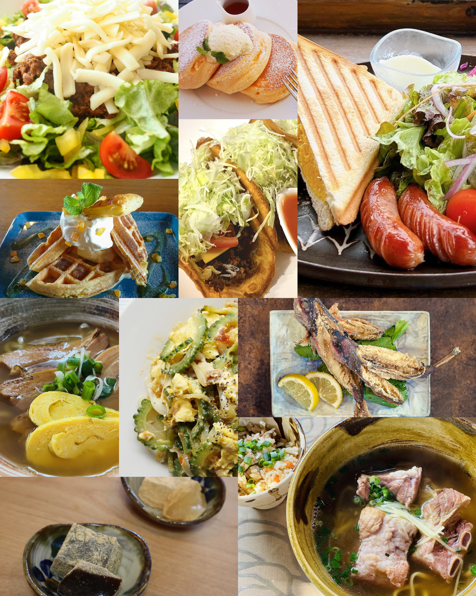
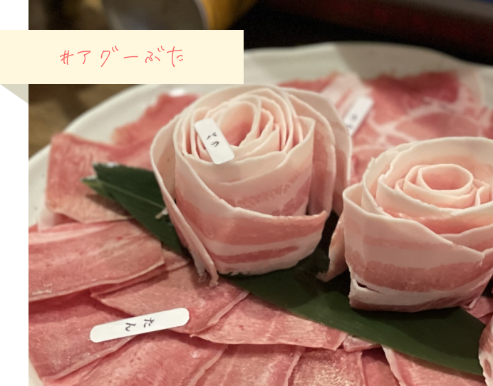
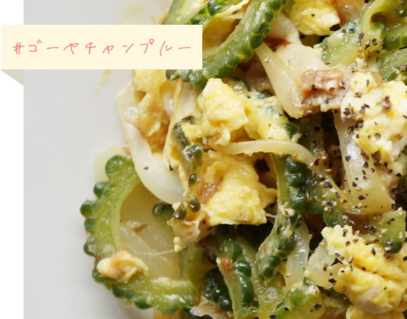
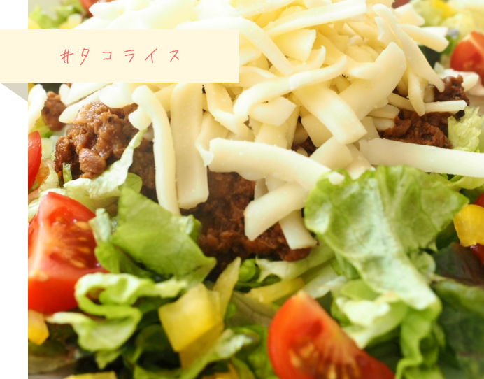
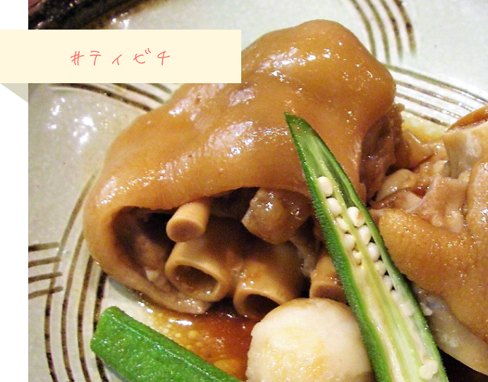
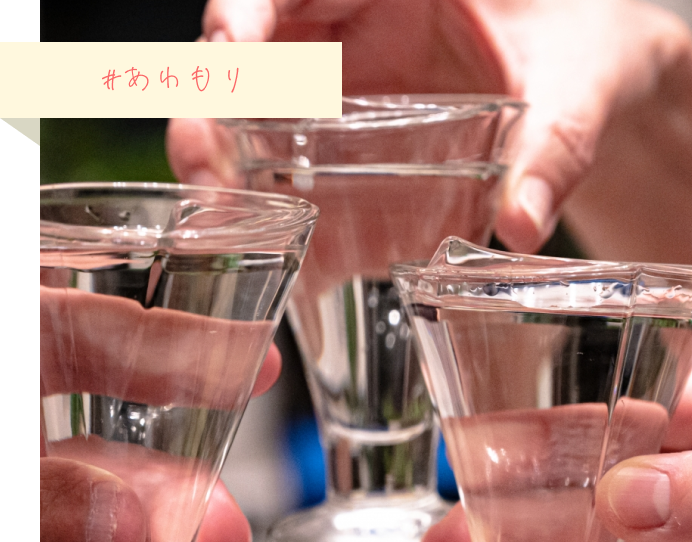
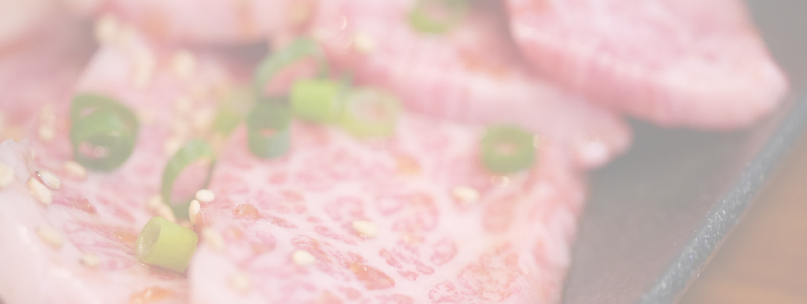

ソーキそば
沖縄料理と言ったらまずはこれ！という名物料理。いたるところにお店があるので、食べ比べしても...


沖縄では地元食材をふんだんに使った料理があります。味はもちろん、馴染みのない美味しい料理を味わえます。中でもアグー豚は新鮮で臭みがなく、焼きものからしゃぶしゃぶまで美味しくいただけます。

沖縄料理と言ったらまずはこれ！という名物料理。いたるところにお店があるので、食べ比べしても...

豚肉の中でも最高級の琉球黒豚。臭みがなく、焼き肉もしゃぶしゃぶは絶品です。

今やご家庭でも簡単に作れる料理ですが、地元のお店で作るものは全然違う？！

沖縄グルメと言ったらこれも外せない！という人気料理。ご飯の上にタコスミートやチーズ、レタス…

豚足を大根や昆布などと一緒に煮込んだ料理です。え？！って思いますが食べたら納得の味です。

沖縄のお酒はやっぱり泡盛！お店によっては飲み比べメニューもあります。



トリップジャパンは、ユニークな日本の魅力を発信していきます。お問い合わせは法人企業および自治体のみ受け付けております。掲載ご希望等についてはお問い合わせフォームよりお申込み下さい。